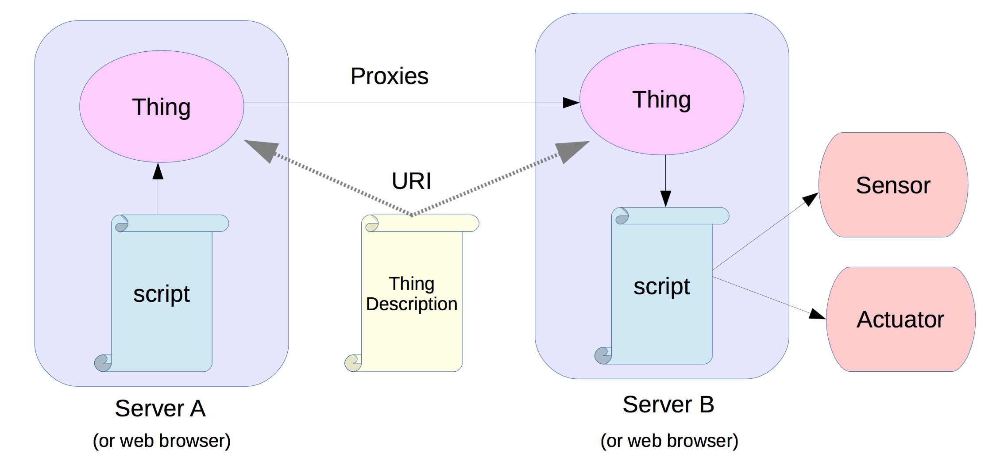
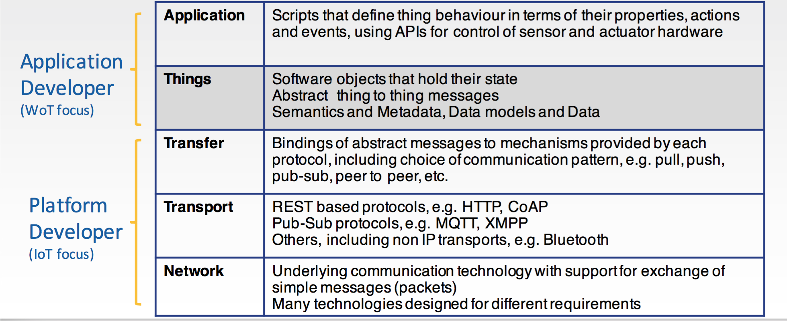

Web of Things Interest Group Charter
Comments are welcome on the Web of Things Interest Group public email list, and you are encouraged to file issues on github, but please use the label "[wot]". The github URL for this document is https://github.com/w3c/charter-drafts/blob/gh-pages/wot-ig-2016.html.
The mission of the Web of Things Interest Group is to counter the fragmentation of the Internet of Things by introducing a Web based abstraction layer spanning existing IoT platforms and standards. We seek to reduce costs through the global reach of Web standards, to enable open markets of services, and to unleash the power of the network effect. As a W3C Interest Group, we're seeking to build a shared understanding of the Web of Things, and to identify opportunities for initiating standards track work within W3C Working Groups.
| Start date | [dd monthname yyyy] (date of the "Call for Participation", when the charter is approved) |
|---|---|
| End date | [dd monthname yyyy] |
| Chairs | [chair name] |
| Team Contacts | Dave Raggett, (0.2 FTE), Kazuyuki Ashimura (0.1 FTE), Yingying Chen (0.1 FTE) |
| Meeting Schedule |
Teleconferences: Weekly with additional topic specific calls as appropriate. Face-to-face: we will meet during the W3C's annual Technical Plenary week; additional face-to-face meetings may be scheduled by consent of the participants, with no more than 4 face to face meetings in total per year. |
Scope
Brief background of landscape, technology, and relationship to the Web, users, developers, implementers, and industry.
Issue: the following is the introduction from the previous charter and probably needs replacing with a more up to date positioning.
The Internet of Things is currently beset by product silos. To unlock the commercial potential there is a need for open ecosystems based upon open standards. This includes standards for identification, discovery and interoperation of services across platforms from different vendors, and will involve the need for rich descriptions and shared data models, as well as close attention to security, privacy, scalability and accessibility. Open ecosystems will stimulate growth through the establishment of larger markets for developers and lifting the burden for tailoring products to vendor specific platforms.
This includes the potential for using scripting languages like JavaScript, data encodings such as JSON and EXI, formats for data and metadata, including Linked Data, and protocols such as HTTP and WebSockets, to name just a few examples. JavaScript could be used for direct access to IoT sensors and actuators from the browser, in service platforms in the cloud or at the network edge, and for device drivers in gateways that use IoT protocols to access embeded / constrained devices, and web protocols to expose them to service platforms.
Identity is important for devices, users, applications and services, e.g. as part of end to end security and for trust management. Unlike regular web applications, we can't assume that the user is present and able to authenticate his or herself. Trust management will entail the means to verify metadata, e.g. the provenance of data, the location of a given sensor, and so forth. This is analogous to know your customer requirements in the banking world.
Applications and services often need data at a higher level than the raw data provided by sensors. Moreover, data needs to be interpreted in the context of other sources of information. The same applies to control systems whose actions need to be translated in context into actions on lower level entities. The Web of Things needs to be able to model the real world at different levels of abstraction, and to enable open markets with free competition of services across these levels. The things in the Web of Things can be considered as virtual representations of objects.
A consequence of this is that the "Things" in the Web of Things are not limited to connected devices, but can also include things that are not and cannot be connected such as people and places, and abstract ideas, such as events (e.g. a concert), organizations, and time periods (e.g. the 70s). Each thing can have one or more virtual representations (avatars). Things can also have histories, e.g. for a car, recording the sequence of previous owners. Avatars have identities, rich descriptions, services, access control and data handling policies. Avatars have URIs and are accessible via web technologies. Avatars make it easier to build applications and services that combine information from different sources and different levels of abstraction.
Issue: the following is the introduction from the draft Working Group charter.
There is broad agreement about the huge potential for services for the Internet of Things (IoT), but this is being held back by fragmentation across many platforms, standards and a rapid evolution of the low level IoT technologies themselves. This Interest Group will seek to define Web technology standards for an abstraction layer that sits on top of existing platforms and standards, and simplifies application development. The starting point is the idea of things that stand for physical or abstract entities, whether connected or not. These can be exposed to applications by software objects with data models describing the object’s properties, actions and events. These software objects can represent local things, e.g. for sensors and actuators attached to the same device as an application script, or remote things, where the object acts as a proxy for a software object on another device.
The approach is based upon the fundamentals of Web architecture:
- URIs for identifying things
- A variety of protocols for accessing things, since no one protocol will be appropriate in all contexts
- Linked Data for describing things as a basis for interoperability and discovery, playing an analogous role to HTML for web pages
URIs can be used to access machine interpretable descriptions of things. These descriptions enable the automatic generation of scriptable objects, whose properties, actions and events correspond to those of the thing the object stands for. An object on one server can act as a proxy for an object on another server. Application developers are shielded from the implementation details of how objects are coupled, allowing platform developers to choose the transport protocols and communication patterns best suited to the context. Servers can be provided at a wide range of scales from microcontrollers to cloud-based server farms.

Note: this illustrates the concepts, but is not intended as an architecture diagram.
The above figure shows a thing on server A that acts as a proxy for a thing on server B which is coupled to a sensor and actuator. The proxy on server A could be set up by a script on that server, or by a script on server B. The latter is useful when server A is on the public Internet and server B is behind a firewall, and you want to provide public access to the thing from server A. Web page scripts can create local proxies for things on servers, subject to the protocols supported by Web browsers and the single origin security policy. The following diagram shows how the abstraction layer for "things" fits into the communications stack.
Note: for a description of potential architectures, see Web of Things Architecture update.

This Interest Group will define Web technology standards to enable services that span different IoT platforms and standards, with a view to countering fragmentation, and enabling a global market of services and associated software tools. This is expected to drive down the costs and risks involved in developing services, and help realise the full potential for the IoT. In short, we seek to extend the Web from a Web of pages to a Web of things.
There are many possible applications across a wide range of domains, e.g. homes, offices, healthcare, cities, electrical grids, retail and manufacturing. The key to realizing the Web of Things is the metadata that provides the basis for semantic interoperability. This Interest Group will focus on the metadata vocabularies that are useful across a broad range of application domains. In addition, we plan work on scripting APIs exposed to application developers, and bindings to common platforms and protocols in collaboration with the standards development organizations responsible for these.
Scope Summary
Standards for enabling interoperability across IoT platforms
- Metadata for describing the data and interaction models exposed to applications, the choice of communications patterns, and the information needed for interoperating with other platforms and protocols, including security settings
- Serialization formats for metadata suitable for processing on resource constrained devices
- Platform independent application facing APIs for things and their lifecycle
- Bindings from the abstract messages to specific platforms and protocols in collaboration with the corresponding organizations
Deliverables
More detailed milestones and updated publication schedules are available on the group publication status page.
Draft state indicates the state of the deliverable at the time of the charter approval. Expected completion indicates when the deliverable is projected to become a Recommendation, or otherwise reach a stable state.
The primary deliverables of the Web of Things Interest Group are IG notes that identify requirements for existing and/or new technical specifications, that would advance the group's mission.
In addition, the group will review and comment on documents generated by the other W3C groups and may review documents coming from external organizations.
Note that the set of deliverables may be merged or split as appropriate to the Interest Group's emerging needs.
- Use Cases and Requirements for the Web of Things
- This document will collect use cases from a range of application domains, and identify requirements that are shared across domains, and those that are specific to each domain.
- Survey of Existing Practices and Standards Relevant to the Web of Things
- This document will look at existing practices and standards, and identify opportunities for new work.
- Guidelines on Best Practices
- This document will identify relevant technologies and approaches to maximise interoperability across all use cases.
- Requirements for Open Markets of Products and Services for the Web of Things
- This document will examine what is needed to enable open markets of applications and services for the Web of Things. See Section 1.0 for some of the topics that will need to be covered.
- High level architecture for the Web of Things
- This document will provide a high level overview of the architectural components of the Web of Things.
- End to End Security for the Web of Things
- This document will look at what is needed to ensure end to end security for applications and services for the Web of Things. For instance techniques for identifying and authenticating users, devices, applications and services; techniques for ensuring confidentiality and privacy, including encryption, access control, provenance and privacy policies. This should include an examination of the potential role and security impact of social relationships between people, places and things.
- Resilience for the Web of Things
- This document will look at what is needed to ensure resilience of applications and services in the face of rapidly varying demand, heterogenous versions of hardware and software, hardware and software faults, and cyber attacks.
Additional deliverables may be added by the Interest Group as appropriate to explore specific topics in greater depth.
Coordination
For all specifications, this Interest Group will seek horizontal review for accessibility, internationalization, performance, privacy, and security with the relevant Working and Interest Groups, and with the TAG. Invitation for review must be issued during each major standards-track document transition, including FPWD and CR, and should be issued when major changes occur in a specification.
Issue: The paragraph above replaces line-item liaisons and dependencies with individual horizontal groups. There's been a suggestion to name and individually link the specific horizontal groups inline, instead of pointing to a page that lists them.
Issue: The requirement for an invitation to review before FPWD and CR may seem a bit overly restrictive, but it only requires an invitation, not a review, a commitment to review, or even a response from the horizontal group. This compromise offers early notification without introducing a bottleneck.
Additional technical coordination with the following Groups will be made, per the W3C Process Document:
W3C Groups
- [other name] Interest Group
- [specific nature of liason]
Note: Do not list horizontal groups here, only specific WGs relevant to your work.
External Organizations
- [other name] Interest Group
- [specific nature of liason]
Participation
To be successful, this Interest Group is expected to have 6 or more active participants for its duration, including representatives from the key implementors of this specification, and active Editors and Test Leads for each specification. The Chairs, specification Editors, and Test Leads are expected to contribute half of a day per week towards the Interest Group. There is no minimum requirement for other Participants.
The group encourages questions, comments and issues on its public mailing lists and document repositories, as described in Communication.
The group also welcomes non-Members to contribute technical submissions for consideration, with the agreement from each participant to Royalty-Free licensing of those submissions under the W3C Patent Policy.
Communication
Technical discussions for this Interest Group are conducted in public. Meeting minutes from teleconference and face-to-face meetings will be archived for public review, and technical discussions and issue tracking will be conducted in a manner that can be both read and written to by the general public. Working Drafts and Editor's Drafts of specifications will be developed on a public repository, and may permit direct public contribution requests.
Information about the group (including details about deliverables, issues, actions, status, participants, and meetings) will be available from the Web of Things Interest Group home page.
Most Web of Things Interest Group teleconferences will focus on discussion of particular specifications, and will be conducted on an as-needed basis.
This group primarily conducts its technical work on the public mailing list public-wot-wg@w3.org (archive). The public is invited to post messages to this list.
The group may use a Member-confidential mailing list for administrative purposes and, at the discretion of the Chairs and members of the group, for member-only discussions in special cases when a participant requests such a discussion.
Decision Policy
This group will seek to make decisions through consensus and due process, per the W3C Process Document (section 3.3). Typically, an editor or other participant makes an initial proposal, which is then refined in discussion with members of the group and other reviewers, and consensus emerges with little formal voting being required.
However, if a decision is necessary for timely progress, but consensus is not achieved after careful consideration of the range of views presented, the Chairs may call for a group vote, and record a decision along with any objections.
To afford asynchronous decisions and organizational deliberation, any resolution (including publication decisions) taken in a face-to-face meeting or teleconference will be considered provisional. A call for consensus (CfC) will be issued for all resolutions (for example, via email and/or web-based survey), with a response period from one week to 10 working days, depending on the chair's evaluation of the group consensus on the issue. If no objections are raised on the mailing list by the end of the response period, the resolution will be considered to have consensus as a resolution of the Interest Group.
All decisions made by the group should be considered resolved unless and until new information becomes available, or unless reopened at the discretion of the Chairs or the Director.
This charter is written in accordance with the W3C Process Document (Section 3.4, Votes), and includes no voting procedures beyond what the Process Document requires.
Patent Policy
This Interest Group operates under the W3C Patent Policy (5 February 2004 Version). To promote the widest adoption of Web standards, W3C seeks to issue Recommendations that can be implemented, according to this policy, on a Royalty-Free basis. For more information about disclosure obligations for this group, please see the W3C Patent Policy Implementation.
Licensing
This Interest Group will use the W3C Software and Document license for all its deliverables.
About this Charter
This charter has been created according to section 5.2 of the Process Document. In the event of a conflict between this document or the provisions of any charter and the W3C Process, the W3C Process shall take precedence.